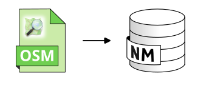

Import OSM
Import BUILDINGS, GROUND and ROADS tables from OSM
Overview
➡️ Convert .osm, .osm.gz or .osm.pbf file into NoiseModelling input tables. We recommend using OSMBBBike : https://extract.bbbike.org/ The following output tables will be created: - BUILDINGS : a table containing the buildings - GROUND : a table containing ground acoustic absorption, based on OSM landcover surfaces - ROADS : a table containing the roads. As OSM does not include data on road traffic flows, default values are assigned according to the -Good Practice Guide for Strategic Noise Mapping and the Production of Associated Data on Noise Exposure - Version 2
💡 The user can choose to avoid creating some of these tables by checking the dedicated boxes

Arguments
Mandatory inputs
pathFile— Path of the OSM file📂 Path of the OSM file, including its extension (.osm, .osm.gz or .osm.pbf). For example: c:/home/area.osm.pbf
Type:
String
Optional inputs
eliminateNoTrafficRoads— Eliminate no traffic roadsIf checked, only roads with these “TYPE” values will remain: - bus_guideway: Dedicated lanes or tracks for buses - busway: Bus-only lanes - living_street: Residential streets with pedestrian priority - motorway: High-speed, restricted-access highways - motorway_link: Connector ramps for motorways - primary: Major roads linking large cities - primary_link: Connector ramps for primary roads - raceway: Racing tracks - residential: Roads in residential areas - road: Generic roads - secondary: Roads connecting smaller towns - secondary_link: Connector ramps for secondary roads - service: Service lanes (access to parking lots, etc.) - tertiary: Roads connecting villages and hamlets - tertiary_link: Connector ramps for tertiary roads - trunk: Important roads that are not motorways - trunk_link: Connector ramps for trunk roads - unclassified: Minor roads not fitting higher classifications - rest_area: Areas for rest along roads - traffic_calming: Traffic calming features (speed bumps, etc.) - traffic_island: Traffic islands
If not checked, all roads are processed as before.
Type:
BooleanDefault:
falseignoreBuilding— Do not import Buildings✅ If the box is checked → the table BUILDINGS will NOT be created.
🟩 If the box is NOT checked → the table BUILDINGS will be created and will contain: - PK : An identifier. It shall be a primary key (INTEGER, PRIMARY KEY) - THE_GEOM : The 2D geometry of the building (POLYGON or MULTIPOLYGON). - HEIGHT : The height of the building (FLOAT). If this information is not available then it is deduced from the number of floors (if available) with the addition of a small random variation from one building to another. Finally, if no information is available, a height of 5m is set by default.
Type:
BooleanDefault:
falseignoreGround— Do not import Surface acoustic absorption✅ If the box is checked → the table GROUND will NOT be created.
🟩 If the box is NOT checked → the table GROUND will be created and will contain: - PK : An identifier. It shall be a primary key (INTEGER, PRIMARY KEY) - ID_WAY : OSM identifier (INTEGER) - THE_GEOM : The 2D geometry of the sources (POLYGON or MULTIPOLYGON) - PRIORITY : Since NoiseModelling does not allowed overlapping geometries, if this is the case, this column is used to prioritize the geometry that will win over the other one when cutting. The order is given according to the type of land use - G : The acoustic absorption of a ground (FLOAT) (between 0 : very hard and 1 : very soft)
Type:
BooleanDefault:
falseignoreRoads— Do not import Roads✅ If the box is checked → the table ROADS will NOT be created.
🟩 If the box is NOT checked → the table ROADS will be created and will contain: - PK : An identifier. It shall be a primary key (INTEGER, PRIMARY KEY) - ID_WAY : OSM identifier (INTEGER) - THE_GEOM : The 2D geometry of the sources (LINESTRING or MULTILINESTRING) - LV_D : Hourly average light and heavy vehicle count (6-18h) (DOUBLE) - LV_E : Hourly average light and heavy vehicle count (18-22h) (DOUBLE) - LV_N : Hourly average light and heavy vehicle count (22-6h) (DOUBLE) - HGV_D : Hourly average heavy vehicle count (6-18h) (DOUBLE) - HGV_E : Hourly average heavy vehicle count (18-22h) (DOUBLE) - HGV_N : Hourly average heavy vehicle count (22-6h) (DOUBLE) - LV_SPD_D : Hourly average light vehicle speed (6-18h) (DOUBLE) - LV_SPD_E : Hourly average light vehicle speed (18-22h) (DOUBLE) - LV_SPD_N : Hourly average light vehicle speed (22-6h) (DOUBLE) - HGV_SPD_D : Hourly average heavy vehicle speed (6-18h) (DOUBLE) - HGV_SPD_E : Hourly average heavy vehicle speed (18-22h) (DOUBLE) - HGV_SPD_N : Hourly average heavy vehicle speed (22-6h) (DOUBLE) - PVMT : CNOSSOS road pavement identifier (ex: NL05) (VARCHAR)
💡 These information are deduced from the roads importance in OSM..
Type:
BooleanDefault:
falseremoveTunnels— Remove tunnels from OSM data✅ If checked, remove roads from OSM data that contain OSM tag tunnel=yes.
Type:
BooleanDefault:
falsetargetSRID— Target projection identifier🌍 Target projection identifier (also called SRID) of your table. It should be an EPSG code, an integer with 4 or 5 digits (ex: 3857 is Web Mercator projection).
🚨 The target SRID must be in metric coordinates.
Type:
Integer
Output
result— Result output stringThis type of result does not allow the blocks to be linked together.
Type:
String